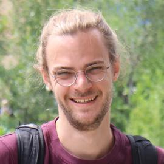

Maximilian Thiessen

Hey there, my name is Max. I am a PhD student supervised by Thomas Gärtner in the machine learning research unit at TU Wien. Before that, I studied computer science at the University of Bonn under the supervision of Tamás Horváth. My main research areas are learning with graphs, active learning, and learning theory. I try to bridge (graph) convexity theory and learning theory. More recently I have started working on graph representations learning and graph neural networks.
- News
- Publications
- Workshop papers
- Community Activities
- People
- Contact
News
- [September 2023] Together with Fabian Jogl and Thomas Gärtner we got our paper "Expressivity-Preserving GNN Simulation" accepted to NeurIPS 2023!
- [July 2023] I won a best poster award at G-Research's ICML poster party in London.
- [Mai 2023] We are again organising the Mining and Learning with Graphs workshop (MLG) at ECMLPKDD in Torino. Submit your work!
- [Mai 2023] Together with Pascal Welke, Fabian Jogl, and Thomas Gärtner we got our paper “Expectation-Complete Graph Representations with Homomorphisms” accepted to ICML 2023!
- [Feb 2023] We are organising the 1st Ccommunity event for machine learning PhD students in Vienna (C’Est La Wien)!
- [Oct 2022] Happy to be recognised as a top reviewer (top 8%) of NeurIPS!
- [Oct 2022] Workshop papers accepted at GLFrontiers@NeurIPS / LoG conference (with Pascal Welke and Thomas Gärtner) and NeurReps@NeurIPS (with Sohir Maskey, Ali Parviz, Hannes Stärk, Ylli Sadikaj, and Haggai Maron)!
- [Sep 2022] Together with Marco Bressan, Andrea Paudice, Nicolò Cesa-Bianchi (University of Milan), and Silvio Lattanzi (Google) we got our paper “Active Learning of Classifiers with Label and Seed Queries” accepted to NeurIPS 2022!
- [Jul 2022] Happy to be recognised as an outstanding reviewer (top 10%) of ICML!
- [Jul 2022] My colleague Fabian Jogl got our paper “Weisfeiler and Leman Return with Graph Transformations” accepted to MLG@ECMLPKDD 2022 and won the (community-voted) best poster award.
- [Jul 2022] Together with a team lead by my colleague Tamara Drucks, we organised machine learning courses for children at the KinderUni Wien.
- [Jun 2022] Our paper “Online Learning of Convex Sets on Graphs” got accepted to ECMLPKDD 2022!
- [Jun 2022] I visited Marco Bressan and Nicolò Cesa-Bianchi at the University of Milan.
Publications
-
Pascal Welke*, Maximilian Thiessen*, Fabian Jogl, Thomas Gärtner (2023):
Expectation-Complete Graph Representations with Homomorphisms.
International Conference on Machine Learning (ICML)
[pdf]
[poster]
[slides]
[video]
[code]
[reviews]
[arXiv]
[conference]
-
Fabian Jogl, Maximilian Thiessen*, Thomas Gärtner (2023):
Expressivity-Preserving GNN Simulation.
Conference on Neural Information Processing Systems (NeurIPS)
[conference]
-
Marco Bressan, Nicolò Cesa-Bianchi, Silvio Lattanzi, Andrea Paudice, Maximilian Thiessen (2022):
Active Learning of Classifiers with Label and Seed Queries.
Conference on Neural Information Processing Systems (NeurIPS)
[video]
[arXiv]
[conference]
-
Maximilian Thiessen, Thomas Gärtner (2022):
Online Learning of Convex Sets on Graphs.
European Conference on Machine Learning and Principles and Practice of Knowledge Discovery in Databases (ECMLPKDD)
[pdf]
[conference]
-
Maximilian Thiessen, Thomas Gärtner (2021):
Active Learning of Convex Halfspaces on Graphs.
Conference on Neural Information Processing Systems (NeurIPS)
[pdf]
[slides]
[video]
[code]
[reviews]
[conference]
-
Maximilian Thiessen, Luis Quesada, Kenneth N Brown (2020):
Improving a Branch-and-Bound Approach for the Degree-Constrained Minimum Spanning Tree Problem with LKH.
International Conference on Integration of Constraint Programming, Artificial Intelligence, and Operations Research (CPAIOR)
[video]
[conference]
Workshop papers
-
Maximilian Thiessen*, Pascal Welke*, Thomas Gärtner (2022):
Expectation Complete Graph Representations using Graph Homomorphisms.
New Frontiers in Graph Learning Workshop (GLFrontiers at NeurIPS)
[pdf]
[poster]
[code]
[reviews]
[workshop]
-
Fabian Jogl, Maximilian Thiessen, Thomas Gärtner (2022):
Weisfeiler and Leman Return with Graph Transformations.
Mining and Learning with Graphs workshop (MLG workshop at ECMLPKDD)
[pdf]
[workshop]
-
Fabian Jogl, Maximilian Thiessen, Thomas Gärtner (2022):
Reducing Learning on Cell Complexes to Graphs.
ICLR Workshop on Geometrical and Topological Representation Learning (GTRL workshop at ICLR)
[pdf]
[reviews]
[workshop]
-
Sohir Maskey, Ali Parviz, Maximilian Thiessen, Hannes Stärk, Ylli Sadikaj, Haggai Maron (2022):
Generalized Laplacian Positional Encoding for Graph Representation Learning.
NeurIPS Workshop on Symmetry and Geometry in Neural Representations (NeurReps at NeurIPS)
[pdf]
[reviews]
[arXiv]
[workshop]
-
Pascal Welke*, Maximilian Thiessen*, Thomas Gärtner (2022):
Expectation Complete Graph Representations using Graph Homomorphisms.
Learning on Graphs Conference (LoG)
[pdf]
[poster]
[code]
[reviews]
[conference]
-
Fabian Jogl, Maximilian Thiessen, Thomas Gärtner (2021):
Active Learning Convex Halfspaces on Graphs.
ICML Workshop on Subset Selection in Machine (SubSetML workshop at ICML)
[pdf]
[video]
[code]
[workshop]
-
Maximilian Thiessen, Thomas Gärtner (2020):
Active Learning on Graphs with Geodesically Convex Classes.
Workshop on Mining and Learning with Graphs (MLG at KDD)
[pdf]
[video]
[code]
[workshop]
Community Activities
- Program committee member/reviewer at conferences:
NeurIPS21'22'23,
ICML'22'23,
ICLR'24,
ECMLPKDD'22'23,
LOG'22'23, and
LWDA'22.
- Regular reviewer for MLJ and the ECMLPKDD journal track (2023).
- Organizer of MLG@ECMLPKDD 2022 and 2023, the 18th and 20th Workshop on Mining and Learning with Graphs.
- Initiator and organizor of C'Est La Wien 2023, the Community Event for Students of Learning Algorithms in Wien.
- Session chair at ECMLPKDD'23.
- Frequent reviewer for various workshops at NeurIPS, ICML, and ICLR.
- Co-organizer of a machine learning course for children at the KinderUni Wien (2022).
People
Frequent collaborators and colleagues
You can find me on Twitter, Github, and LinkedIn.
Most of my publications are indexed by Google scholar.
Office:
2nd Floor, Erzherzog-Johann-Platz 1 (FB02), 1040 Vienna, Austria.
Email: You can send mail to maximilian.thiessen@tuwien.ac.at.